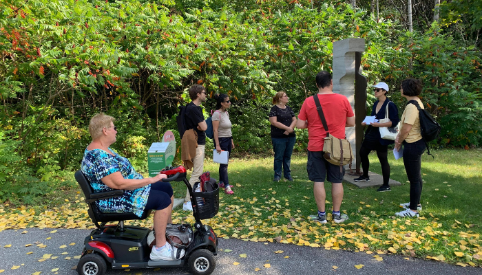

Activités proposées
La Maison MONA conçoit des activités de médiation et des parcours de découverte à Montréal et dans les alentours. Ces parcours dans l'espace public permettent à tou·te·s de découvrir le patrimoine et les espaces culturels avec les médiatrices et l'application MONA.
Notre approche
Animées par des médiatrices chevronnées, ces activités encouragent des discussions participatives et visent à favoriser un esprit d'accessibilité universelle. Nous cherchons également à valoriser les œuvres d'art réalisées par des femmes et des artistes autochtones ou issu·e·s des communautés culturelles, mettant ainsi en lumière leur contribution à la richesse artistique et au tissu social de notre ville.
Nous proposons régulièrement des activités gratuites ou subventionnées ouvertes au public (sur inscription), des parcours d'accueil aux personnes nouvelles arrivées ainsi que des activités destinées aux publics scolaires et universitaires (Retrouvez notre offre sur le répertoire Culture-Éducation).

Déroulement
Animées par deux médiatrices, les activités se déroulent dans l'espace public et proposent une promenade de 1 à 2 km. Elles durent en moyenne 1h30 et sont destinées à des groupes de maximum 20 personnes.
Tarifs
- Pour un parcours pré-existant : 500$ +tx par groupe
- Pour un mandat personnalisé : contactez-nous pour obtenir un devis.
Nous offrons des rabais aux organismes communautaires et aux associations étudiantes.
Nos parcours
Ahuntsic : au fil de la rue Gouin
Partez à la découverte du passé rural de ce lieu clé de l’histoire de l’île de Montréal. Ce parcours qui longe la rue Gouin célèbre les habitant·e·s, connu·e·s et méconnu·e·s du quartier, et particulièrement les immigrant·e·s qui font d’Ahuntsic-Cartierville un espace vibrant de mixité sociale et culturelle..
Hochelaga-Maisonneuve d'hier à aujourd'hui
Découvrez le quartier accompagné·e·s de Gilles Vigneault et de la Bolduc durant ce parcours qui retrace le passé bourgeois et populaire d'Hochelaga-Maisonneuve à travers son vaste répertoire de monuments et de bâtiments patrimoniaux de style Beaux-arts et ses murales colorées.
Le patrimoine actuel de Saint-Léonard
Déambulez avec nous sur l’ancienne côte Saint-Michel (maintenant Jarry Est) et dans l’ancien noyau villageois de Saint-Léonard composé de maisons ancestrales et de bâtiments patrimoniaux. Ce parcours présente aussi des sculptures dans des parcs de l’arrondissement, témoins de la richesse culturelle de ce quartier..
Commémoration et murales à CDN
Situé au versant du Mont-Royal, Côte-des-Neiges est l’un des quartiers les plus dynamiques de la ville de Montréal. Ce parcours vous permet de découvrir les joyaux patrimoniaux, les œuvres d’arts public et les sites commémoratifs de ce lieu d’une grande vitalité.
Les trésors méconnus de Montréal-Nord
À chaque jour, la sculpture Hommage aux travailleurs de Pierre Granche salue les passant·e·s traversant, à pied ou en automobile, les rues de Montréal-Nord. Venez explorer les autres trésors artistiques de ce quartier, encore méconnu pour certain·e·s, qui borde la Rivière-des-Prairies et dont l’histoire date du passé agricole de l’Ile de Montréal
Voyage multiculturel dans Parc-Extension
Sous la thématique de la terre d’accueil, ce parcours débute à la Gare Parc, un lieu phare qui a marqué l’arrivée de plusieurs vagues d’immigrations à Montréal. Ce parcours célèbre les différentes communautés culturelles qui laissent leur empreinte sur l’art et le tissu social du quartier Parc-Extension.
Promenade autour du Carré Saint-Louis
Se déployant du mythique Carré Saint-Louis à la BANQ, ce parcours présente des œuvres d’art qui rendent hommage à l’histoire littéraire québécoise allant d’Octave Crémazie à Émile Nelligan, jusqu’à Dany Laferrière.
Villeray à travers ses institutions culturelles
Explorez avec un regard nouveau les sculptures, les verrières et les murales autour d’institutions culturelles (Patro Le Prévost, le centre culturel Claude Léveillée etc.) qui sont des incontournables du pittoresque quartier Villeray.
Les sculptures du parc Lafontaine
Situé au cœur du plateau Mont-Royal, le Parc Lafontaine est l’un des plus importants espaces verts de la ville de Montréal. Ce parcours est axé sur la diversité des œuvres sculpturales présente dans le parc. Il vous invite aussi à découvrir des personnages importants de la culture québécoise tel Sir Louis-Hippolyte Fontaine et Denise Pelletier.
L'art public sur le campus de l'UdeM
Les nombreuses œuvres d’art public sur le campus et ses alentours vous surprendront par leur diversité! Réalisé pour la communauté universitaire, ce parcours propose plusieurs options de trajet selon les intérêts des participant·e·s. Curieux·ses d'en apprendre davantage ?Contactez-nous !